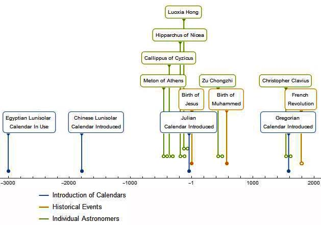

Astronomy is at the heart of many early civilizations and one of its most important applications is that of time keeping. The earliest evidence of astronomical activity is an Ishango bone with markings, thought to be a lunar calendar which dates back to around 20,000 BC. An important part of time keeping is calendars as these are essential in religious practice, agriculture, and governance.
In general, to produce a calendar, it is necessary to determine the length of a solar year and a lunar month, known as a lunisolar calendar. However, there is a vast variety of calendars; the Mayans included Venus along with the Sun and Moon in their dating system while on the other hand the Islamic religious calendar is exclusively lunar.
The solar year is now known to be approximately 365.2422 days and the lunar month is approximately 29.5306 days (so there are about 12.3683 lunar months in a year). These values were not known to the ancients. Therefore, the first task of producing a calendar included observationally determining these time periods and then deciding how best to combine days, months and years. Early attempts at producing calendars by the Babylonians, Chinese, Egyptians and others often included 12 months with alternating 29 and 30-day months in order to keep in step with the Moon, which gave a total of 354 days. This was roughly 11 days short of a solar year. As such, intercalary months were sporadically added into the year to keep it in step with the seasons. Improvements were made at predicting when new months should be added; an example of this is the 19 year cycle proposed by Meton (although discovered independently by others, for example in China) which was then improved upon by Callippus. Additionally, the seasons are of unequal length and this observation led Hipparchus to propose the Suns orbit around the Earth was eccentric.
In 46BC, Julius Caesar introduced a 12 month calendar that eliminated the need for additional months. By removing the requirement to keep in step with the Moon, the length of a year could be chosen so that it was very close to that of a solar year. The average calendrical year was 365.25 days thanks to the inclusion of a leap year every 4 years. Despite being a very good approximation to the solar year, over a number of centuries the date of the solar equinoxes drifted relative to their calendrical date. Because of the importance of the spring equinox in determining the date of Easter, a new calendar was produced under instruction from Pope Gregory the XIII by Christopher Clavius. This was the Gregorian Calendar which is what is typically used today. It is only a slight modification of the Julian Calendar (omitting 3 leap years every 400 years) thus slightly reducing the average length of a calendrical year to 365.2425 days. Meanwhile, Persian calendar reforms, initiated by Mailk Shah, sultan of the Seljuq Empire in 1079, had prompted Omar Khayyam to an outstandingly accurate measurement of the year - by far the most accurate of the pre-telescope era. With enormous confidence, Khayyam gave the length as 365.24219858156 days. We know now that the length of the year is changing in the sixth decimal place over a person's lifetime.
Calendar reforms, however, are not something of the distant past. For example in the late 18th and early 19th century, there was a calendar reform following the French Revolution – this calendar was based on a 10-day week aimed to remove any trace of religion from the calendar, as well as bringing it into line with the broader decimilisation of measurements. A new calendar marking a new regime is not uncommon, for example in China with each new Emperor a new calendar would be produced – these include calendars produced by Luoxia Hong and Zu Chongzhi.
Beyond the calendar, the study of time in astronomy played an important role in daily timekeeping such as sundials and also in navigation.